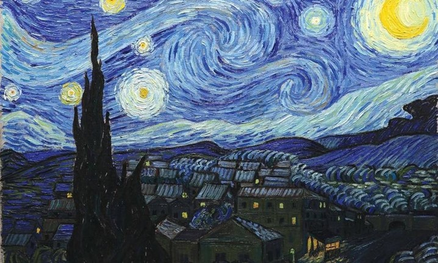
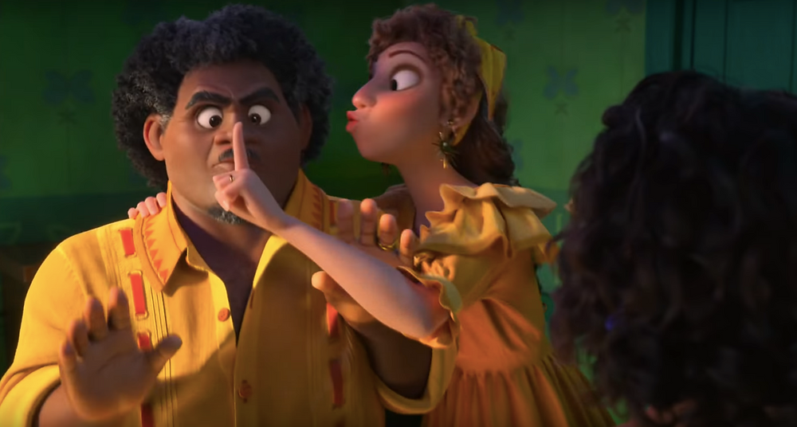
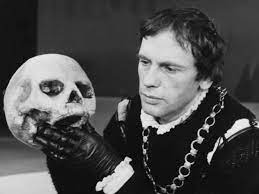

Questão 2
Quem foi o artista impressionista que produziu a obra Noite Estrelada?

Questão 3
A música “We don’t talk about Bruno” da animação “Encanto” ultrapassou vários outros hits considerados históricos e ganhou várias indicações. Quem foi seu compositor?

Questão 5
Você sabe o nome do dramaturgo conhecido pelas obras “A Megera Domada”, “Sonho de uma noite de verão”, “Hamlet” e etc?
